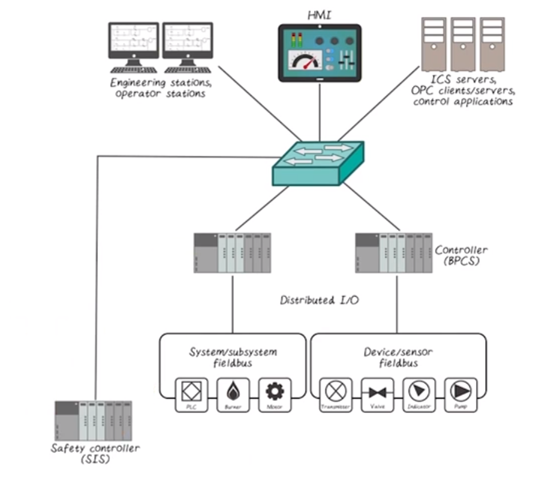
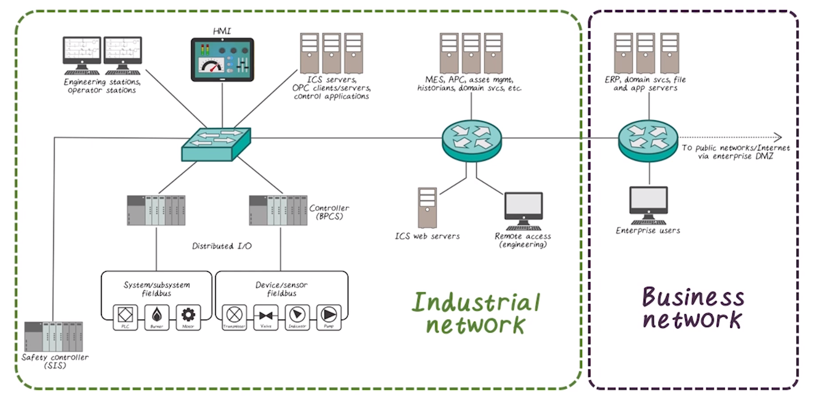
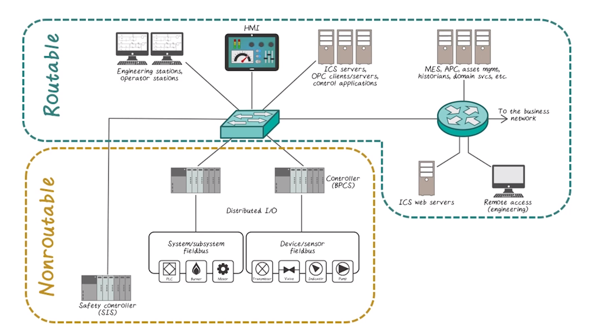
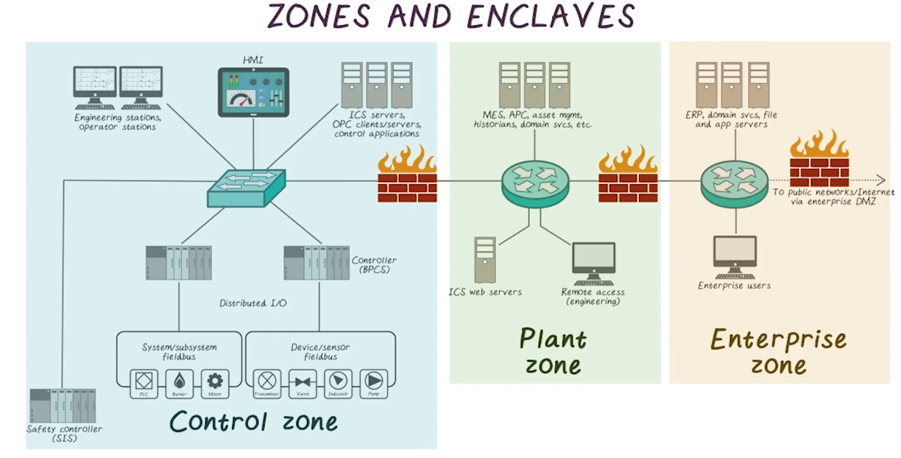
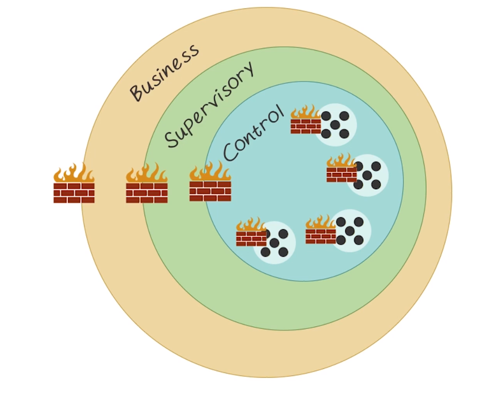
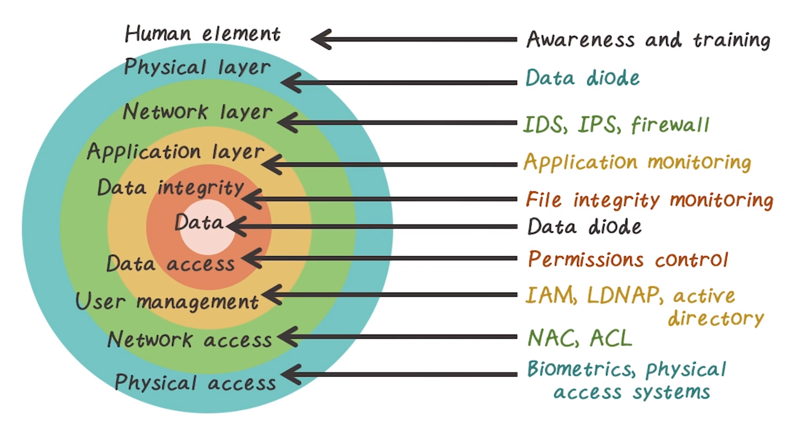

ICPSS Lecture Notes - Lesson 4 - Industrial Networks
Industrial Networks
- Automation systems that provide control and monitoring to CPSs
- Process control systems
- Distributed control systems
- Supervisory control and Data Acquisition systems
- SCADA!
Simplified Representation of Industrial Network

Within wider context of actual network

Protocols
- Often use non standard protocols, such as Modbus
- Often designed for serial use, have been adjusted to work at varying levels of OSI model
- Because they were not designed to be publicly exposed, often they are fundamentally insecure
- Security by obscurity is no longer sufficient
Routability
- Distinction between routable and non-routable networks is diminishing as IP slowly eats everything
- Routable typically means “uses IP”, while non-routable may use serial, bus, or point-to-point communication 
- Legacy protocols such as modbus have also been updated to work over IP
- At this point it’s safest to assume all networks are connected to routable networks, one way or another
- This is further exacerbated by remote-access functionality on otherwise non-routable devices
Zones and Enclaves

- To ensure protection, network segmentation must be done
- Does not necessarily require physical boundary, but logical delineation at least must be done
- Perimiter is the outmost bound of assets, and is a natural point to place controls
- Cloud architectures make defining a perimiter a bit more complicated
Critical Infrastructure
- Industrial Network == any network operating some sort of automated control system that communicates digitally over a network
- Critical Infrastructure == the critical systemss and assets used within a networked computing infrastructure
- 16 sectors recognized by the US as critical infrastructure
- PPD-21
- banking and finance, chemical, IT, manufacturing, defense, food and Agriculture, commercial, comms, dams, emergency services, energy, govt facilities, healthcare, nuclear, transportation, water
- Shoutout to NERC CIP regulating the power grid
- 16 sectors recognized by the US as critical infrastructure
- Lectures chat through some of the above list, and discuss some nuance. No real meat there, not transcribed
Common Industrial Security Recommendations
- Identifying what systems need to be protected
- Asset inventory, and assess importance thereof
- Tells us what should be monitored and how closely
- Informs network segmentation and placement of security points such as firewalls
- Separating the systems logically into functional groups
- reduces attack surface, easiest step to do so
- firewall rules get a lot easier if you’re only protecting one kind of thing, fewer permit rules needed
- functional DMZ’s
- Implementing a defense-in-depth strategy around each system or group
- Controlling access into and between each group
- Monitoring activities that occur within and between groups
- Limiting the actions that can bew executed within and between groups

- Note the firewall icons can be any number of security things, such as ACLs, firewalls, application filters, etc

- Defense in depth, the diagram. This is good.
Additional Security Recommendations
- Real-time security monitoring
- Application whitelisting
- Policy whitelisting